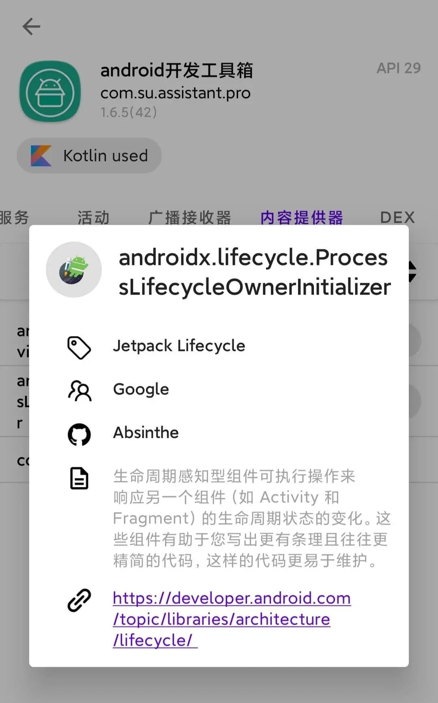
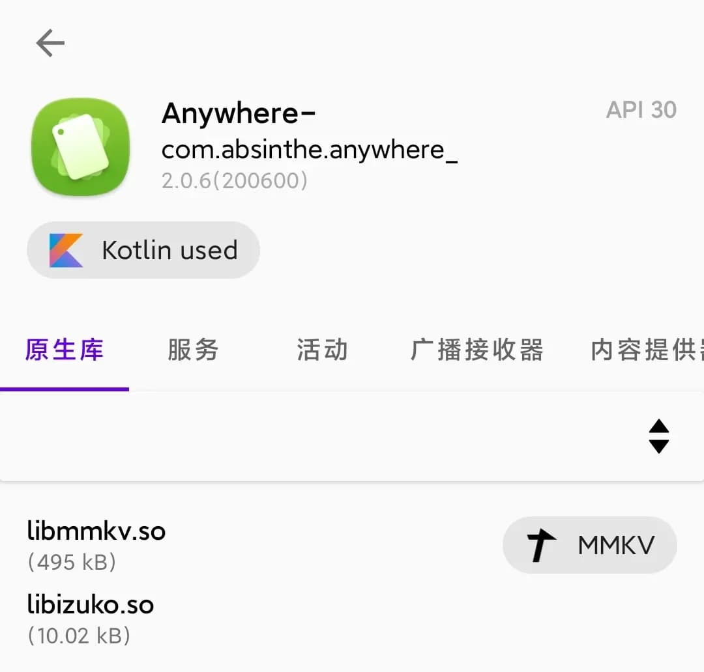
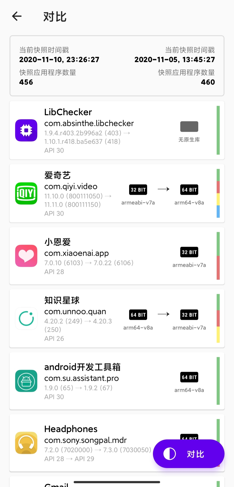

用 LibChecker 摸清你手机里每款 App 的底细——从装到用完整走一遍
LibChecker 能看穿 Android 应用的原生库架构、知名 SDK 引用、签名和权限。这篇教程从安装到快照追踪到 WebUI 导出，带你完整走一遍。
读完这篇教程，你将能独立用 LibChecker 扫描手机上每一款 App 的原生库、追踪版本变化、并在电脑上查看完整的应用信息报告。全程不用 root，也不需要懂反编译。
准备工作
你需要：
- 一台 Android 6.0 以上的手机
- 存储空间至少预留 100MB（快照和导出都占空间）
- LibChecker 最新版——去它的官网拿安装包就行，或者直接搜"LibChecker下载"也能找到
好，假设你已经装好并打开了应用。下面我们一步步来。
第一步：主界面初览——应用列表上的标签都是什么意思
打开 LibChecker，第一眼是按字母排序的应用列表。每一行除了图标、名字、版本号，还有几个小标签：
- 32 位 / 64 位 / 多架构 / 无原生库：这是它最核心的功能标签。判断依据是 APK 里
lib/目录下有哪些 ABI 架构的 .so 文件。完全没有 .so 的应用就是"无原生库"，讨论架构对它没意义。 - Kotlin：说明这款应用用了 Kotlin 写业务代码。
- Split APK：表示它是 Google Play 的拆分式安装包。
- 16KB / Overlay / Modern Xposed：这些是 LibChecker v2.x 新增的识别标签，分别对应不同的技术特征。
别急着逐个点开，先记住一件事：架构标签不是随便猜的，它实打实扫描了 APK 二进制。后面我们进详情页会看到具体证据。
第二步：点进一款 App——原生库和知名库两个 Tab
随便挑一款 App（比如微信或者抖音），点进去。默认展示的是应用概览页，这里能看到包名、安装来源、首次安装时间、签名证书指纹这些基本信息。
切换到「原生库」Tab，这就是 LibChecker 最初被开发出来要解决的核心问题——看一款应用的 .so 文件清单和架构分布。

上面的截图里，你会看到 .so 文件按 ABI 分组列出。比如一款多架构的应用，arm64-v8a 和 armeabi-v7a 两个目录下的 .so 文件都会列出来。这里的知识补充一下：ARMv8 设备优先装载 arm64-v8a，找不到才退到 armeabi-v7a，最后才是更老的 armeabi。Google Play 从 2019 年开始就强制新上架应用支持 64 位，就是为了避免兼容层带来的性能损失。
再切到「知名库」Tab。这里的匹配结果来自 LibChecker 维护的云端规则仓库——可以在设置里选 GitHub 源还是 Gitee 源，国内网络环境下选 Gitee 通常更新更顺。更详细的规则匹配逻辑和阈值调整，去LibChecker文档里能翻到完整说明。如果识别到某款知名 SDK（比如 OkHttp、Glide、MMKV），会标亮并给出简介。

这一步的实用场景：你想知道某款 App 用了什么开源库、有没有引入你不想用的 SDK（比如某些统计 SDK），这里是最快的办法。
第三步：快照功能——追踪 App 悄悄改了什么
这是 LibChecker v2.0+ 引入的杀手级功能，但很多人第一次用会被"保存完列表是空的"搞懵。我们来理清楚它的逻辑。
快照的本质：在一个时间点把手机上所有应用的分析结果拍下来存好；之后保存第二张快照，两次对比就能看到哪些 App 的原生库、权限、签名变了。
操作路径：主界面右上角三个点 → 保存快照 → 等进度条跑完（100+ 应用可能要等个十几秒）。
关键认知：第一次保存完，快照列表本来就是空的。快照页面只会在应用发生变化时自动生成对比项。你保存第一张快照是"基准线"，等某个 App 更新了（比如应用商店推了新版本），再来保存第二张，那时候对比项就出来了。

对比视图里，新增的库会标绿、删除的标红、权限变动和签名变更也一目了然。做逆向分析的人常用这个功能追 App 版本迭代引入了什么新组件，普通用户也能用来察觉"这款 App 更新后偷偷加了什么权限"。
第四步：导出完整报告——在电脑上看
LibChecker v2.5.4 之后加了应用信息导出功能。如果你不想在小屏幕上一个个翻，或者想做一次设备 App 盘点，这步很实用。
导出操作：主界面 → 设置 → 应用信息导出。执行后文件会保存在设备存储里（路径取决于 Android 版本）。
查看方式有两种：
- 手机浏览器直接打开 lc.absinthe.life，上传刚才导出的文件
- 传到电脑——数据线、微信文件传输助手、云盘都行，然后在电脑浏览器打开同一个网址
WebUI 展示的结构和手机端看到的一致，但数据更完整：它包含了手机端扫描到而 WebUI 无法从 APK 二进制推断的字段，比如安装来源和首次安装时间。
导出功能的几个典型场景：
- 换机前盘点：旧手机导出 → 新手机 WebUI 打开 → 对比两款设备的 App 生态差异
- 定期量化：每隔一段时间导出一次，看看设备上 32 位应用的占比是不是在减少
- 团队协作：导出文件可以直接分享，同事打开就能看
常见卡点与解法
卡点一：快照保存卡住不动
最常见的三个原因：
- 存储空间不够：去系统设置 → 存储，确认有剩余空间。快照文件虽然不大，但内存卡满了系统什么都做不了。
- 前台服务被系统杀掉：LibChecker v2.0+ 靠前台服务后台保存，但国内厂商 ROM 的后台策略特别激进。解决办法是把 LibChecker 加进系统白名单（各厂商的"自启动管理"或"后台管理"里设），同时给它"忽略电池优化"权限。
- 应用太多等得久：100+ 应用的设备，快照保存可能要半分钟以上——别慌，等就好。
卡点二：保存完快照列表为空
再强调一遍：这是正常行为。快照页面只在应用发生变化时才显示对比项。第一次保存是基准线，没有东西可以对比。去应用商店随便更一款 App，回来再保存一次快照，差异就出来了。
卡点三：想重置设置但找不到按钮
LibChecker 的设置面板没有一键重置。要重置只有两条路：
- 系统设置 → 应用 → LibChecker → 存储 → 清除数据
- 卸载重装
注意：清除应用数据会同时清掉本地快照和云端规则缓存，提前备份好快照。
进阶一句话
你可以在设置里切换云端规则仓库源、调整库引用统计的阈值（默认展示出现 ≥N 次的库）、手动触发云端规则更新；快照数据也能导出备份，换手机或清数据前记得跑一下备份。
这套工具的规则仓库和文档维护用的是 GitHub 生态，同步到了三个镜像源：主仓库在GitHub，国内用户访问慢的话可以直接走Gitee镜像，GitCode那边也有一份备份。三份内容完全一致，选哪个看你网络顺手就好。